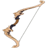

| Icone | Nome | Atk min | Atk max | Sub | Valor min | Valor max | Passiva |
|  | Estilingue | 37.61 | 354.38 | CritRate% | 6.8% | 31.24% | Se a flecha do Ataque Normal e Carregado atingir um alvo dentro de 0.3s após o disparo, o Dano é aumentado em 36-72%. Caso contrário, o Dano é diminuído em 10%. |
| Arco Recurvado | 37.61 | 354.38 | Bonus HP% | 10.21% | 46.92% | Derrotar um oponente recupera 8-16% da Vida. |
| Icone | Nome | Atk min | Atk max | Sub | Valor min | Valor max | Passiva |
| Arco de favonius | 41.07 | 454.36 | Bonus ER% | 13.33% | 61.25% | Os Acertos Críticos possuem 60-100% de chance de gerar uma pequena quantidade de Partícula Elemental, que irá regenerar 6 de Energia para o Personagem. Pode ocorrer uma vez a cada 12-6s. | |
| Crepúsculo Desvanecido | 43.73 | 565 | Bonus ER% | 6.67% | 30.63% | Possui três estados: Entardecer, Amanhecer e Alvorada. Estes estados aumentam o Dano infligido em 6-12%/10-20%/14-28% respectivamente. Ao atingir um inimigo com um ataque, se trocará para o próximo estado. Essa troca pode acontecer uma vez a cada 7s. Esse efeito também ocorrerá se o personagem que tiver esta arma equipada não estiver ativo no campo de batalha. |
| Icone | Nome | Atk min | Atk max | Sub | Valor min | Valor max | Passiva |
 |
Aqua Simulacra | 44.34 | 541.83 | Bonus CritDMG% | 19.2% | 88.2% | Aumenta a Vida em 16-32%. Se existirem inimigos próximos, o personagem que tem esta arma equipada terá um aumento de Dano de 20-40%, independentemente do personagem estar ativo no campo de batalha. |
| Elegia do Suspiro Final | 45.94 | 608.07 | Bonus ER% | 12.0% | 55.13% | Uma parte do "Concerto Milenar" que flutua no vento. Aumenta a Proficiência Elemental em 60-120 pontos. Quando a Habilidade Elemental ou o Supremo atingir os inimigos, o personagem obterá um Símbolo das Lembranças, que pode ser ativado uma vez a cada 0.2s, mesmo quando o personagem não está no campo de batalha. Possuir 4 Símbolo das Lembranças faz consumir todos eles, e faz todos os personagens da equipe obterem o efeito de "Concerto Milenar: Música da Despedida" por 12s: A Proficiência Elemental será aumentada em 100-200 pontos, além disso o ATQ será aumentado em 20-40%. Dentro de 20s depois da ativação, não é possível obter os Símbolos das Lembranças de novo. Entre todos os efeitos de vários valores, os efeitos do mesmo valor não podem ser acumulados. |